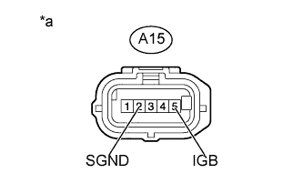
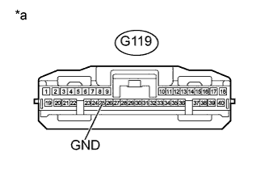

DTC U1102 Нарушение связи с датчиком радара |
| Код DTC | Условие обнаружения DTC | Неисправный участок |
| U1102 | Во время движения автомобиля со скоростью 50 км/час (31 миля в час) или выше, по крайней мере, на 1 с прекращается обмен данными между датчиком радара миллиметрового диапазона и ЭБУ помощи при движении |
|
| 1.ПРОВЕРЬТЕ ЖГУТ ПРОВОДОВ И РАЗЪЕМ (ДАТЧИК РАДАРА МИЛЛИМЕТРОВОГО ДИАПАЗОНА – АККУМУЛЯТОРНАЯ БАТАРЕЯ И МАССА) |
|  |
Отсоедините разъем A15 датчика.
Измерьте напряжение в соответствии со значениями, приведенными в таблице.
| Контакты для подключения диагностического прибора | Положение переключателя | Заданные условия |
| A15-5 (IGB) - масса | Замок зажигания в положении ON (ВКЛ) | 11–14 В |
| Зажигание выключено | Менее 1 В |
Измерьте сопротивление в соответствии со значениями, приведенными в таблице ниже.
| Контакты для подключения диагностического прибора | Условие | Заданные условия |
| A15-2 (SGND) - масса | Всегда | Менее 1 Ом |
| *a | Вид спереди разъема со стороны жгута проводов: (к датчику радара миллиметрового диапазона в сборе) |
|
| ||||
| OK | |
| 2.ПРОВЕРЬТЕ ЖГУТ ПРОВОДОВ И РАЗЪЕМ (ЭБУ ПОМОЩИ ПРИ ДВИЖЕНИИ – МАССА) |
|  |
Отсоедините разъем G119 ЭБУ.
Измерьте сопротивление в соответствии со значениями, приведенными в таблице ниже.
| Контакты для подключения диагностического прибора | Условие | Заданные условия |
| G119-25 (GND) - масса | Всегда | Менее 1 Ом |
| *a | Вид спереди разъема со стороны жгута проводов: (к ЭБУ помощи при движении) |
|
| ||||
| OK | |
| 3.ПРОВЕРЬТЕ ЖГУТ ПРОВОДОВ И РАЗЪЕМ (ДАТЧИК РАДАРА МИЛЛИМЕТРОВОГО ДИАПАЗОНА – ЭБУ ПОМОЩИ ПРИ ДВИЖЕНИИ) |
Отсоедините разъем A15 датчика.
Отсоедините разъем G119 ЭБУ.
Измерьте сопротивление в соответствии со значениями, приведенными в таблице ниже.
| Контакты для подключения диагностического прибора | Условие | Заданные условия |
| A15-4 (LRRD) - G119-38 (LRRD) | Всегда | Менее 1 Ом |
| A15-4 (LRRD) - масса | Всегда | 10 кОм или более |
|
| ||||
| OK | |
| Перейдите к шагу 2 |
| 4.ЗАМЕНИТЕ ЭБУ ПОМОЩИ ПРИ ДВИЖЕНИИ |
Замените ЭБУ помощи при движении (Нажмите здесь).
| ДАЛЕЕ | |
| 5.ПРОВЕРЬТЕ DTC |
Удалите коды DTC (Нажмите здесь).
Выполните следующие действия, чтобы убедиться, что выполняются условия регистрации DTC.
Совершите на автомобиле поездку со скоростью не менее 50 км/час (31 миль в час).
Включите выключатель круиз-контроля.
Проверьте коды DTC (Нажмите здесь).
|
| ||||
| OK | ||
| ||